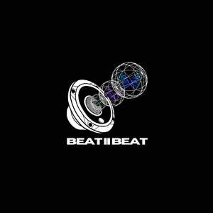

Trade Mark Journal No.2025/033 15 August 2025
UK00004243039 1 August 2025 (9,36,38,41,45)

- Class 9
- Downloadable music files; Downloadable electronic publications; Downloadable software for mobile phones; Downloadable computer software for providing access to a global computer network; Mobile applications for music production and collaboration; Digital media, namely, downloadable audio and visual files featuring user-generated content; Software for generating AI-based music and art; Downloadable software for creating and editing audio and visual content.
- Class 36
- Financial payment services; Financial transaction services; Financial and monetary services; Financial services ; Financial and monetary transaction services .
- Class 38
- Telecommunications services for providing access to computer databases; Provision of telecommunication connections to a global computer network; Electronic bulletin board services [telecommunications services]; Telecommunications services relating to electronic commerce; Transmission of user-generated content via a global computer network; Streaming of audio, visual, and audiovisual material via a global computer network; Providing user access to live-streamed gaming, musical performances, and concerts.
- Class 41
- Entertainment services, namely, providing an on-line platform featuring music and musical content for the purpose of collaboration between musicians ; Providing non-downloadable music and audio recordings via a global computer network; Production of music; Music composition services; Event management [organisation of educational, entertainment, sporting or cultural activities]; Providing a website featuring user-generated content in the field of music and art; Providing an online forum for users to share and showcase their creative works; Providing online non-downloadable electronic publications in the nature of musical scores, art, and creative works; Providing live entertainment, namely, live-streamed musical performances, concerts, and gaming competitions; Providing a website featuring non-downloadable live-streamed audio and visual content; Providing an online forum for users to share and showcase AI-generated creative works .
- Class 45
- Online social networking services; Licensing of intellectual property [legal services]; Legal services relating to intellectual property rights; Advisory services relating to intellectual property protection; Intellectual property management services; Electronic monitoring services for security purposes; Licensing of AI-generated intellectual property; Legal services relating to intellectual property rights for AI-generated content.
BEAT II BEAT LTD